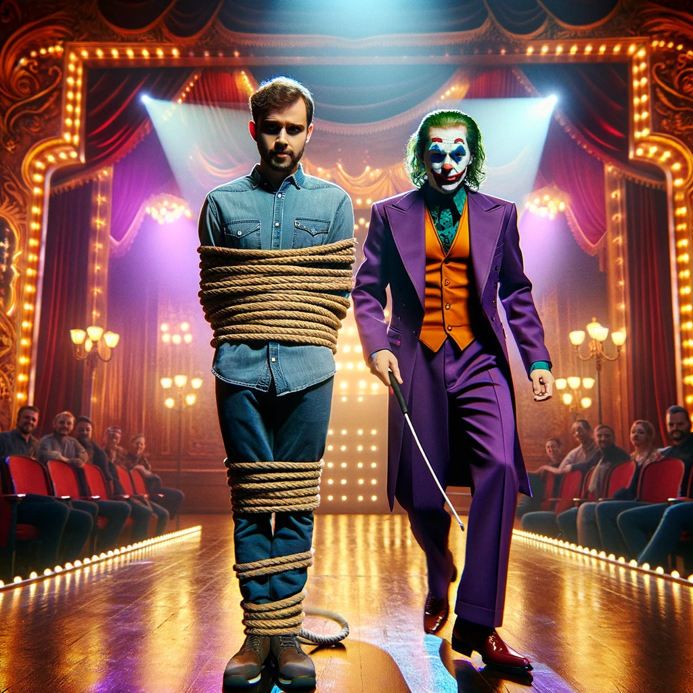
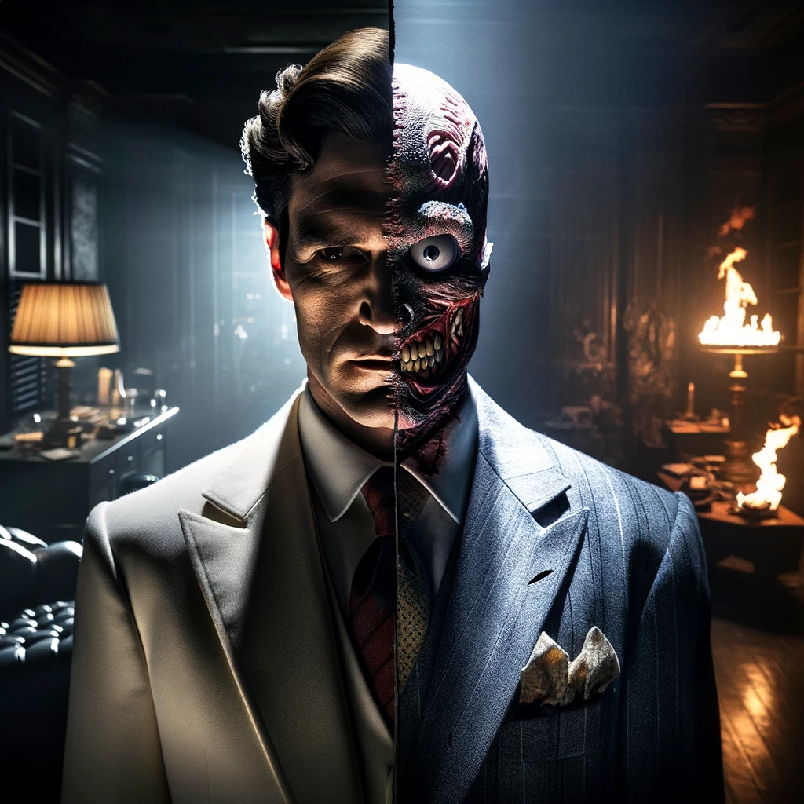

En las sombras de la ciudad de Gotham, una noche particularmente sombría se cernía sobre sus habitantes. Un silencio inquietante envolvía las calles, roto únicamente por el distante aullido de las sirenas de policía. La noticia se esparció rápidamente: el Asilo Arkham, el recinto que mantenía a raya a los criminales más peligrosos y dementes, había sido comprometido. Todos los villanos, desde el enigmático Acertijo hasta el caótico Joker, habían escapado, desatando una ola de terror en Gotham. Batman, el guardián oscuro de la ciudad, recibió la noticia mientras se encontraba en la Batcueva. Alfred, su leal mayordomo y confidente, le informó de la situación con una voz cargada de preocupación. Sin perder tiempo, Batman se equipó con sus herramientas más avanzadas y se dirigió hacia el caos, listo para enfrentar lo que fuera necesario para restaurar la paz en Gotham. La noche era joven, y el desafío era mayor que nunca. Mientras Batman se deslizaba por el cielo nocturno de Gotham, dos situaciones críticas demandaban su atención: El Joker había tomado como rehenes a los visitantes del museo de Gotham, amenazando con desatar su característico gas del Joker sobre los inocentes si Batman no se rendía ante él. Dos Caras había comenzado un asalto al banco central de Gotham, poniendo en peligro la vida de los empleados y desafiando a Batman a detenerlo antes de que pudiera vaciar las bóvedas. Batman se encontraba ante una encrucijada crítica. Cada decisión conduciría a consecuencias distintas, y solo él podía decidir cuál de estos peligros abordar primero.
Opción 1: Dirigirse al museo de Gotham para confrontar al Joker y salvar a los rehenes.
Opción 2: Ir al banco central para enfrentarse a Dos Caras y evitar el robo.
¿Cuál debería ser el próximo movimiento de Batman?
|
Opción 1
 |
Opcion 2
 |